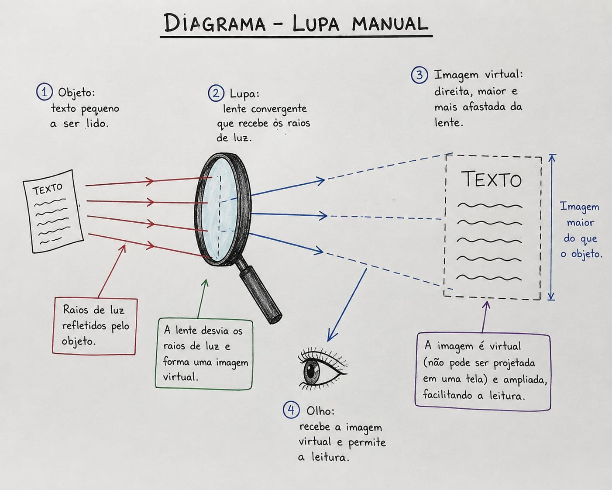
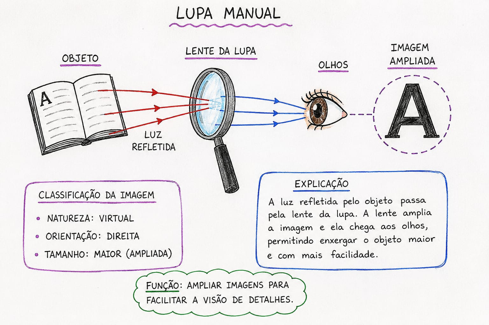
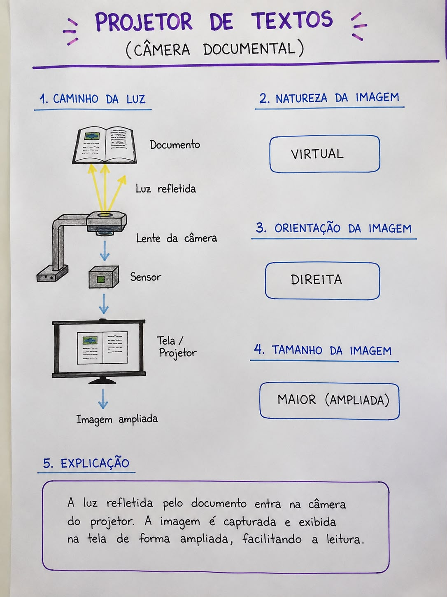
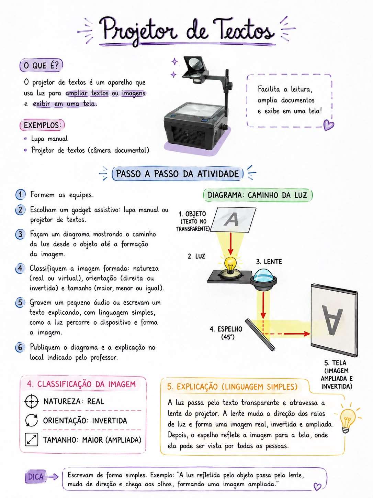

1. Estudo da Lupa Manual


Natureza: Virtual
Formada pelo prolongamento dos raios de luz, não pode ser projetada em telas.
Orientação: Direita
A imagem mantém a mesma posição vertical do objeto real.
Tamanho: Maior e Afastada
Amplia as dimensões para facilitar a visão de detalhes.
2. Estudo do Projetor de Textos


O projetor é um aparelho que usa a luz para ampliar textos ou imagens e exibir em uma tela, facilitando a leitura de documentos.
Funcionamento do Projetor
Explicação em Linguagem Simples: A luz passa pelo texto transparente e atravessa a lente do projetor. A lente muda a direção dos raios de luz e forma uma imagem real, invertida e ampliada. Depois, o espelho reflete a imagem para a tela, onde ela pode ser vista por todas as pessoas.
Natureza: Real
Ao contrário da lupa, a imagem do projetor clássico é real porque é projetada diretamente sobre uma tela externa.
Orientação: Invertida
A lente inverte a imagem (de ponta-cabeça). O sistema ou o operador ajusta o documento para que a leitura fique legível na tela.
Tamanho: Maior (Ampliada)
Gera uma ampliação em larga escala ideal para exibição coletiva.
3. Passo a Passo da Atividade
Siga o roteiro do exercício proposto em sala de aula:
- Formem as equipes: Organizem-se nos grupos determinados.
- Escolham um gadget assistivo: Definam se vão trabalhar com a Lupa Manual ou com o Projetor de Textos.
- Façam um diagrama: Desenhem o caminho da luz desde o objeto de origem até a formação final da imagem.
- Classifiquem a imagem formada: Identifiquem as propriedades de Natureza (real ou virtual), Orientação (direita ou invertida) e Tamanho (maior, menor ou igual).
- Gravem ou escrevam uma explicação: Usem linguagem simples para detalhar como a luz percorre o dispositivo. Dica: "A luz refletida pelo objeto passa pela lente, muda de direção e chega aos olhos."
- Publiquem o resultado: Entreguem o diagrama e o texto explicativo no local indicado pelo professor.